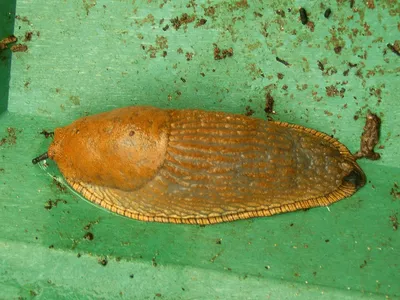
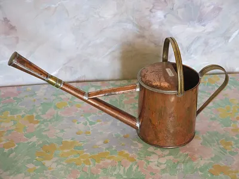
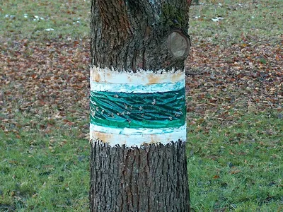
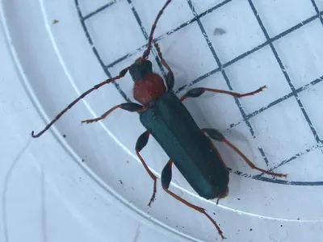

Was frisst an meiner Pflanze?
Oft sieht man den Täter nicht, nur das, was er hinterlässt. Schau dir das Schadbild an, finde den Verursacher und erfahre, wie du ohne Gift gegensteuern kannst.
- Genau hinsehen Blattunterseite, Triebspitzen und Erde untersuchen. Eine Lupe hilft bei winzigen Tieren.
- Zur richtigen Zeit schauen Schnecken, Dickmaulrüssler und Ohrwürmer kommen erst nachts. Mit einer Taschenlampe findest du sie.
- Nicht gleich spritzen Ein paar Läuse oder angefressene Blätter sind normal und locken Nützlinge an.
- Nützlinge fördern Marienkäfer, Igel, Kröten und Laufkäfer halten viele Schädlinge auf Dauer klein.
An Blättern und Trieben
Die meisten Schäden zeigen sich zuerst an den Blättern. Schau dir an, wie die Fraßstellen aussehen und ob es Spuren gibt.
- Löcher und SchleimspurenUnregelmäßige Löcher, glänzende Schleimspuren, Jungpflanzen sind über Nacht verschwunden.Verursacher: Spanische Wegschnecke
- Halbrunde Buchten am BlattrandWie mit einer Lochzange ausgestanzt, vor allem an Rhododendron und Kirschlorbeer.Verursacher: Gefurchter Dickmaulrüssler
- Kohl bis auf die Rippen abgefressenGrüne Kotkrümel, gelb-schwarze Raupen in Gruppen an der Blattunterseite.Verursacher: Großer Kohlweißling
- Eingerollte, klebrige TriebspitzenSchwarze Läuse dicht an dicht, Ameisen laufen auf und ab.Verursacher: Schwarze Bohnenlaus
- Weiße Wolke beim BerührenWinzige weiße Insekten fliegen auf, die Blätter kleben.Verursacher: Weiße Fliege
- Lilien zerfressen, Häufchen auf den BlätternRote Käfer und schmierige Larven unter einer Kotschicht.Verursacher: Lilienhähnchen
- Gespinste und kahle Stellen im BuchsInnen braun und kahl, feine Fäden und grüne Kotkrümel.Verursacher: Buchsbaumzünsler
- Zusammengesponnene junge Blätter am ObstbaumIm Frühjahr, dazu grüne Raupen mit Katzenbuckel.Verursacher: Kleiner Frostspanner
An Früchten
Angefressene Früchte haben oft eine einfache Erklärung. Ein Blick auf Bohrlöcher und Schleim hilft weiter.
Im Rasen und im Boden
Wer unter der Erde lebt, verrät sich durch Hügel, braune Flecken oder welkende Pflanzen.
- Hohe, runde ErdhügelLockere, krümelige Erde, der Gang liegt mitten unter dem Hügel.Verursacher: Maulwurf
- Flache, längliche HügelMit Wurzelresten, Pflanzen kippen um oder lassen sich herausziehen.Verursacher: Schermaus
- Braune Flecken im RasenDie Grasnarbe lässt sich wie ein Teppich abheben, darunter weiße Engerlinge.Verursacher: Gartenlaubkäfer
- Topfpflanze welkt trotz GießenDie Wurzeln sind abgefressen, in der Erde liegen gekrümmte weiße Larven.Verursacher: Gefurchter Dickmaulrüssler
Helfer im Garten
Diese Tiere fressen viele der Verursacher. Je mehr von ihnen im Garten leben, desto seltener musst du eingreifen.
- Siebenpunkt-MarienkäferFrisst mit seinen Larven Hunderte Blattläuse
- FlorfliegeIhre Larven heißen „Blattlauslöwen“
- HainschwebfliegeSieht aus wie eine Wespe, frisst aber als Larve Blattläuse
- Gemeiner OhrwurmNachtjäger in Obstbäumen, frisst Blattläuse und Insekteneier
- GoldlaufkäferJagt Schnecken, Raupen und deren Eier
- TigerschnegelNacktschnecke, die Gelege anderer Schnecken frisst
- GartenkreuzspinneFängt Fliegen, Mücken und geflügelte Blattläuse
- RegenwurmLockert den Boden und macht aus Laub Humus
Sanfte Helfer gegen Schäden
- Beispielfoto · Foto: Müller-Jessen, CC BY-SA 3.0 – Lizenzangaben im Bildnachweis

Unser TippSchneckenzaun aus Metall
Auswahl bei Amazon
Die abgekantete Oberkante hält Nacktschnecken dauerhaft vom Beet fern, ganz ohne Gift.
Bei Amazon ansehen Schneckenzaun aus Metall (Werbelink, öffnet in neuem Fenster) Ratgeber: Schnecken ohne Gift - Beispielfoto · Foto: Schlaghecken Josef, CC BY-SA 4.0 – Lizenzangaben im Bildnachweis

Kulturschutznetz
Auswahl bei Amazon
Ein feines Netz über Kohl und Möhren hält Kohlweißling, Kohlfliege und Möhrenfliege ab.
Bei Amazon ansehen Kulturschutznetz (Werbelink, öffnet in neuem Fenster) - Beispielfoto · Foto: Tangopaso, Gemeinfrei – Lizenzangaben im Bildnachweis

Nematoden gegen Dickmaulrüssler
Auswahl bei Amazon
Winzige Fadenwürmer, die mit dem Gießwasser ausgebracht werden und die Larven im Boden befallen. Für Mensch, Tier und Pflanze unbedenklich.
Bei Amazon ansehen Nematoden gegen Dickmaulrüssler (Werbelink, öffnet in neuem Fenster) - Beispielfoto · Foto: Markus Hagenlocher, CC BY-SA 3.0 – Lizenzangaben im Bildnachweis

Leimring für Obstbäume
Auswahl bei Amazon
Hält die flugunfähigen Frostspanner-Weibchen auf. Ende September anbringen, am besten mit Abstand zur Rinde.
Bei Amazon ansehen Leimring für Obstbäume (Werbelink, öffnet in neuem Fenster) - Beispielfoto · Foto: Michel Helmecke, CC BY-SA 2.0 de – Lizenzangaben im Bildnachweis

Unser TippBecherlupe mit Vergrößerung
Auswahl bei Amazon
Insekten kurz einfangen, genau ansehen und wieder freilassen. Ideal auch für Kinder.
Bei Amazon ansehen Becherlupe mit Vergrößerung (Werbelink, öffnet in neuem Fenster) - Beispielfoto · Foto: Albarubescens, CC BY-SA 4.0 – Lizenzangaben im Bildnachweis
 Unser Tipp
Unser TippMarienkäferlarven gegen Blattläuse
Auswahl bei Amazon
Lebende Larven, die direkt auf befallene Pflanzen gesetzt werden. Wirkt am besten bei frühem Befall.
Bei Amazon ansehen Marienkäferlarven gegen Blattläuse (Werbelink, öffnet in neuem Fenster) Ratgeber: Nützlinge fördern
Werbelink: Wenn du über diesen Link etwas kaufst, erhält der Gartentierkompass eine kleine Provision von Amazon. Für dich ändert sich am Preis nichts. Als Amazon-Partner verdiene ich an qualifizierten Verkäufen.